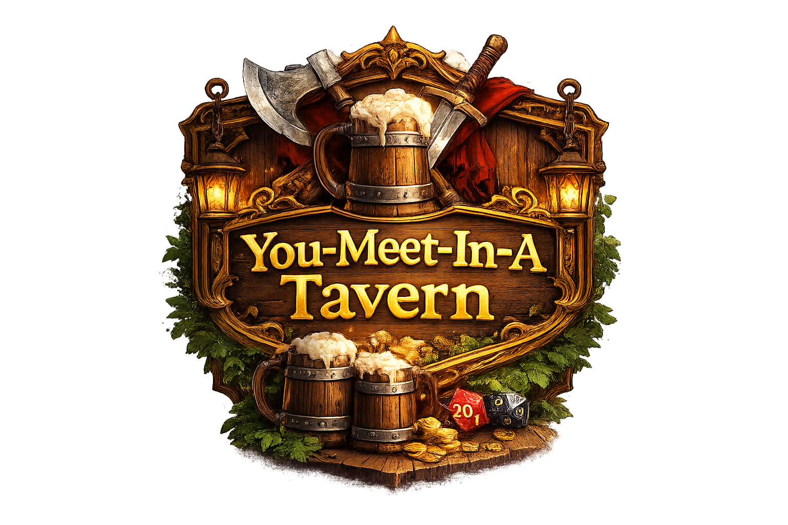

You-Meet-In-A-Tavern (YMIAT)
You-Meet-In-A-Tavern (YMIAT) is een beginners- en kindvriendelijke D&D 5e-homebrew — zeg maar een lichte D&D-variant. Je leert snel de kern van D&D 5e en andere tabletop-RPG’s, zonder dobbelsteenchaos. Meer kijken naar de tafel, minder naar het personageblad.
Ontwerpdoelen
You-Meet-In-A-Tavern (YMIAT) kiest voor tempo, consistente resolutie en makkelijk leren. Eén kernmechanic, een compacte getallenschaal en een beperkt aantal betekenisvolle keuzes. Spelers snappen altijd wat een actie kost, waar hun kunnen vandaan komt, en wat hun keuzes betekenen in het verhaal aan tafel.
Het systeem bouwt op het 5.1 System Reference Document (SRD 5.1) en haalt ideeën uit Tales of the Valiant, Nimble en Pathfinder Second Edition. De regels zijn herschreven tot een eenvoudige, consistente homebrew voor D&D 5e.
Moderne basis (wat het gebruikt)
- Alleen d20’s voor resolutie
- Alleen eigenschapsmodifiers
- Herkenbare class-progressie, proficiency en spellcasting-structuur
- Spell Points/Mana in plaats van spell slots / ‘Vanciaanse magie’
Klassieke speelwaarden (hoe het voelt)
- Compacte wondenschaal: schade telt Wonden van 0 tot Max. wonden, geen damage-dice-stapels
- Geen standaard globale skill-lijst; alleen expliciet gegeven skills tellen
- Tijd als concrete resource via Momenten
- Optionele verdedigingssaves aan spelerskant, in de geest van vroeg D&D
- Resolve die uit mislukking komt — risico en gevolg blijven voelbaar
- Minder optimaliseren, meer focus op kosten, timing en risico
Moderne mechanieken, klassieke prioriteiten: snel spel, duidelijke gevolgen, betekenisvolle keuzes.
You-Meet-In-A-Tavern (YMIAT) is een fan-made D&D 5e-homebrew en is niet gelieerd aan, gesponsord door of goedgekeurd door Wizards of the Coast, Kobold Press, Paizo of enige andere uitgever. Dungeons & Dragons en D&D zijn handelsmerken van Wizards of the Coast.